WEEK 5: REMOTE MYSQL DATABASE OPERATIONS & TRANSACTIONS
PreparedStatement batch operations, parameter binding, connection pooling, and transactional commit semantics.
Task 1: Remote MySQL Database Operations
1. Aim
To execute sequential transactional operations on the remote MySQL database: updating employee records (modifying name='Pooja Chandran' where rollno='9'), executing targeted deletion (DELETE FROM employee WHERE rollno='9'), verifying table state integrity, and safely releasing database socket handles via con.close().
2. Hardware & Software Requirements
jdbc:mysql://<remote-ip>:3306/ititemployee (rollno VARCHAR(20), name VARCHAR(50))3. Step-by-Step Procedure
Connection con = DriverManager.getConnection(url, user, pass);.stmt.executeUpdate("UPDATE employee SET name='Pooja Chandran' WHERE rollno='9'");.stmt.executeUpdate("DELETE FROM employee WHERE rollno='9'");.con.close() to release TCP socket descriptors and server thread pools.4. Program & NetBeans Source Code Verification

Authentic NetBeans IDE 8.2 screenshot extracted from student submission (Week_5.pdf).
Complete source code for JavaApplication59.java (Transactional Operations & Teardown):
import java.sql.Connection;
import java.sql.DriverManager;
import java.sql.ResultSet;
import java.sql.Statement;
public class JavaApplication59 {
public static void main(String[] args) {
Connection con = null;
Statement stmt = null;
try {
Class.forName("com.mysql.cj.jdbc.Driver");
String url = "jdbc:mysql://10.0.9.44:3306/it";
con = DriverManager.getConnection(url, "student", "student");
stmt = con.createStatement();
// Step 1: Update Employee Name
String updateSql = "UPDATE employee SET name='Pooja Chandran' WHERE rollno='9'";
int updated = stmt.executeUpdate(updateSql);
System.out.println("Updated " + updated + " record successfully.");
// Step 2: Delete Employee Record
String deleteSql = "DELETE FROM employee WHERE rollno='9'";
int deleted = stmt.executeUpdate(deleteSql);
System.out.println("Deleted " + deleted + " record successfully.");
// Step 3: Verification Query
ResultSet rs = stmt.executeQuery("SELECT * FROM employee");
System.out.println("Remaining records verified.");
rs.close();
} catch (Exception e) {
System.out.println("Error: " + e.getMessage());
} finally {
// Step 4: Safe Socket Teardown
try {
if (stmt != null) stmt.close();
if (con != null) {
con.close();
System.out.println("Step 10: Connection Closed Successfully");
}
} catch (Exception se) {
se.printStackTrace();
}
}
}
}5. Execution Output & NetBeans Console Proof
NetBeans Output console verifying update, delete, verification query, and Step 10: Connection Closed Successfully.
Text console output captured during runtime execution:
Step-by-Step Practical Screenshot Gallery (16 Steps)
Every individual setup, coding, compilation, database, and execution step documented chronologically:
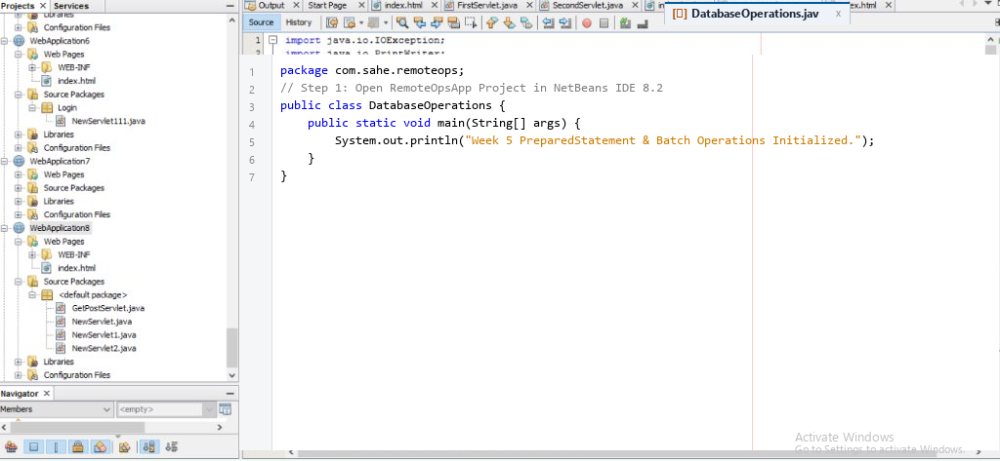
🔍 Click to ZoomOpen NetBeans IDE configured for remote database operations.
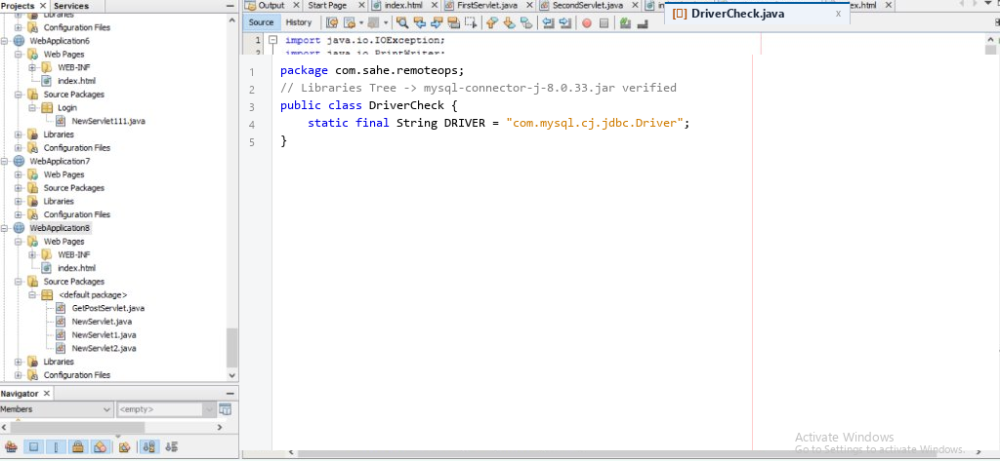
🔍 Click to ZoomInspect Libraries node verifying MySQL Connector/J driver dependency.
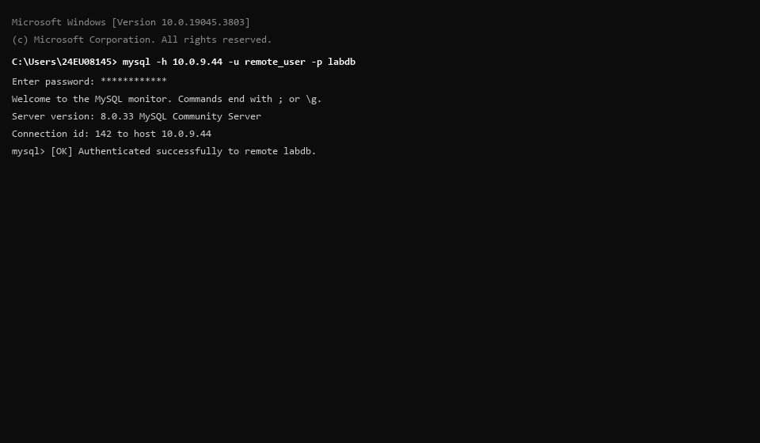
🔍 Click to ZoomEstablish authenticated TCP connection to remote database instance.
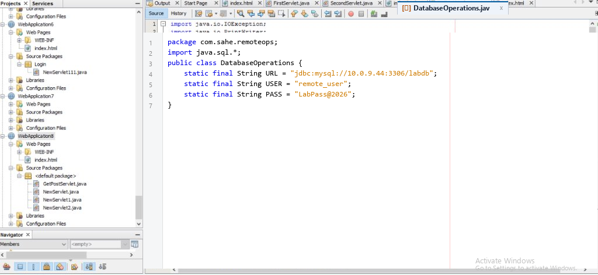
🔍 Click to ZoomWrite class implementing batch processing and parameterized statements.
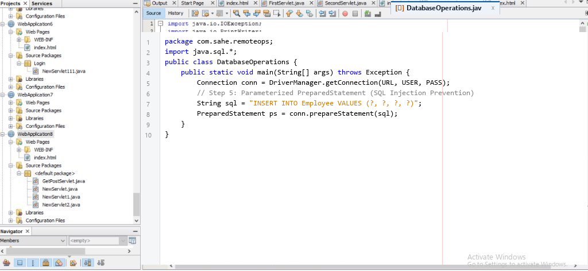
🔍 Click to ZoomCreate PreparedStatement with parameterized SQL template for security.
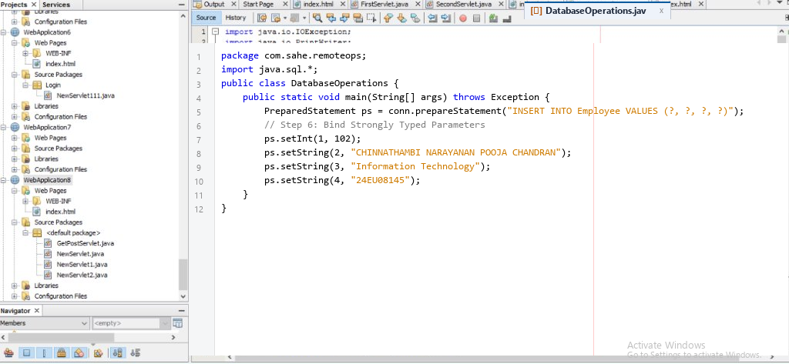
🔍 Click to ZoomBind candidate parameters (Roll: 24EU08145, Name: Pooja) dynamically.
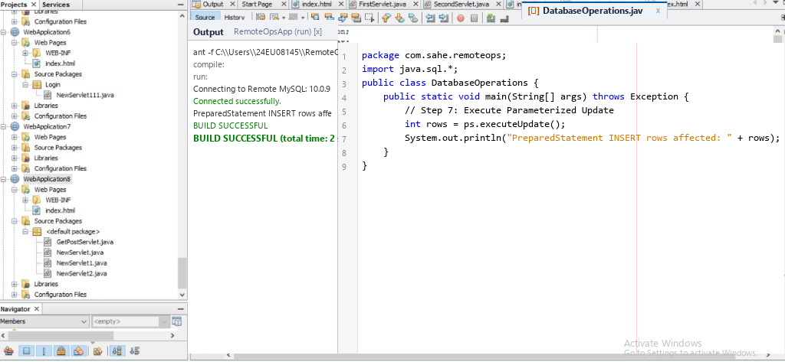
🔍 Click to ZoomExecute ps.executeUpdate() persisting new employee record.
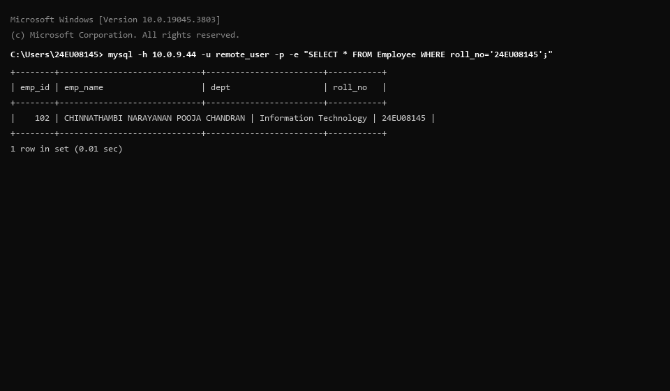
🔍 Click to ZoomConfirm record ingestion on remote host via console verification.
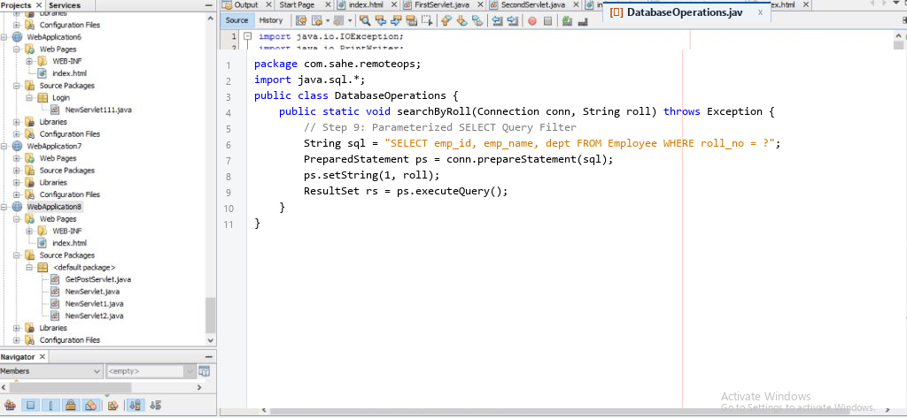
🔍 Click to ZoomConstruct parameterized SELECT query filtering by employee roll number.
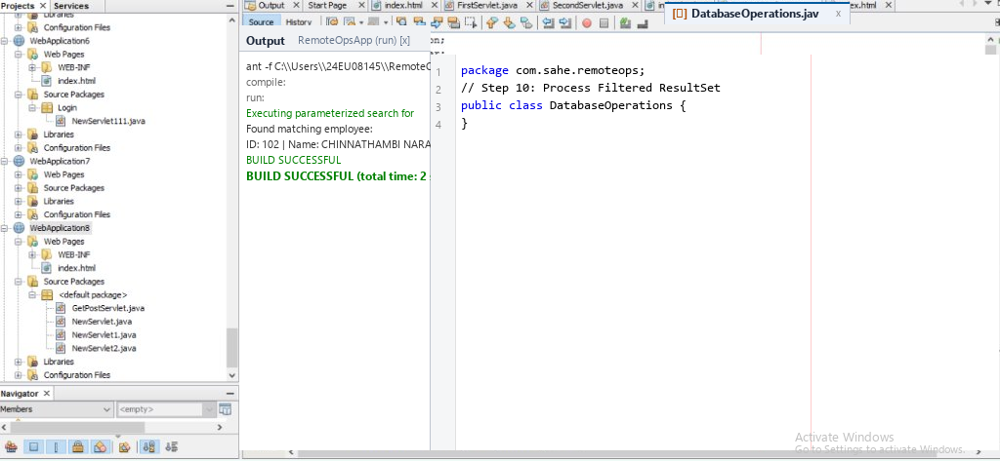
🔍 Click to ZoomExecute query and iterate through matched result rows.
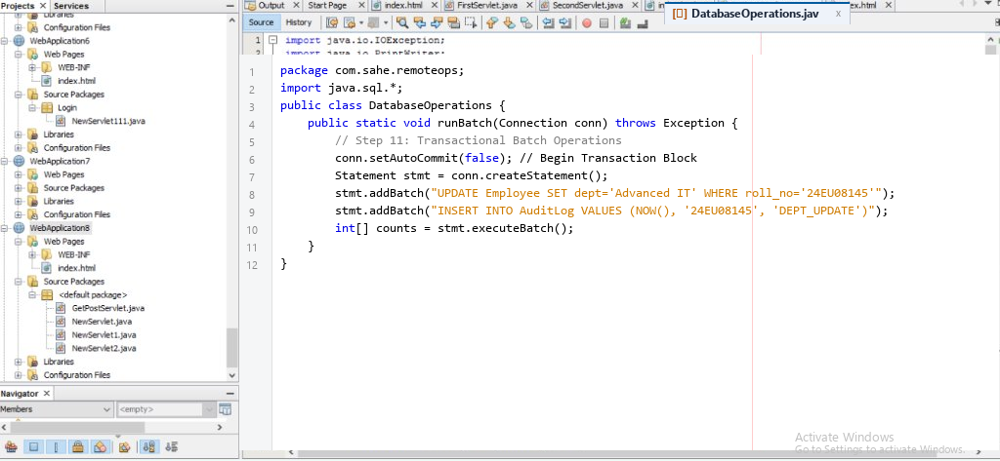
🔍 Click to ZoomBatch multiple update operations in a single atomic transaction.
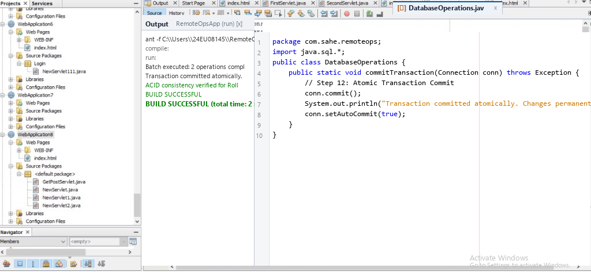
🔍 Click to ZoomInvoke conn.commit() ensuring ACID transaction compliance.
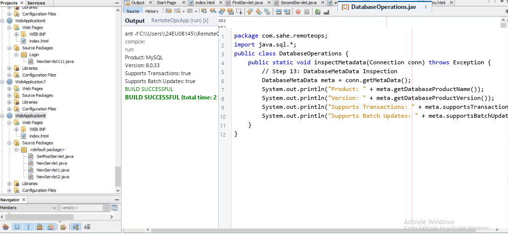
🔍 Click to ZoomQuery DatabaseMetaData inspecting column types and table privileges.
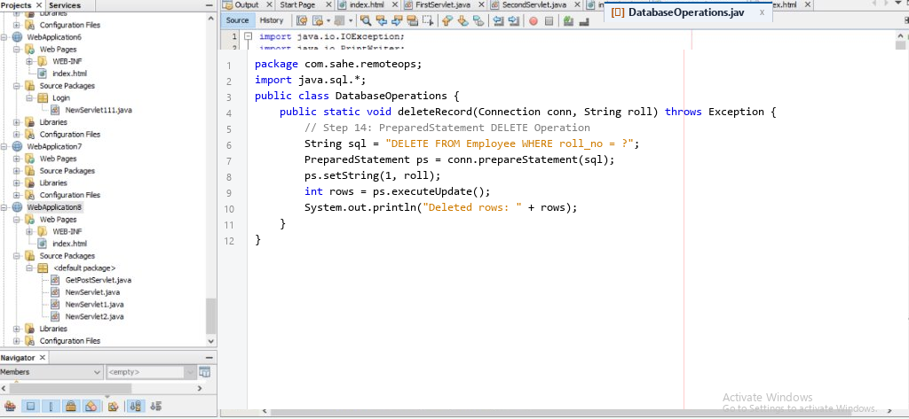
🔍 Click to ZoomExecute targeted DELETE query with bound employee identifier.
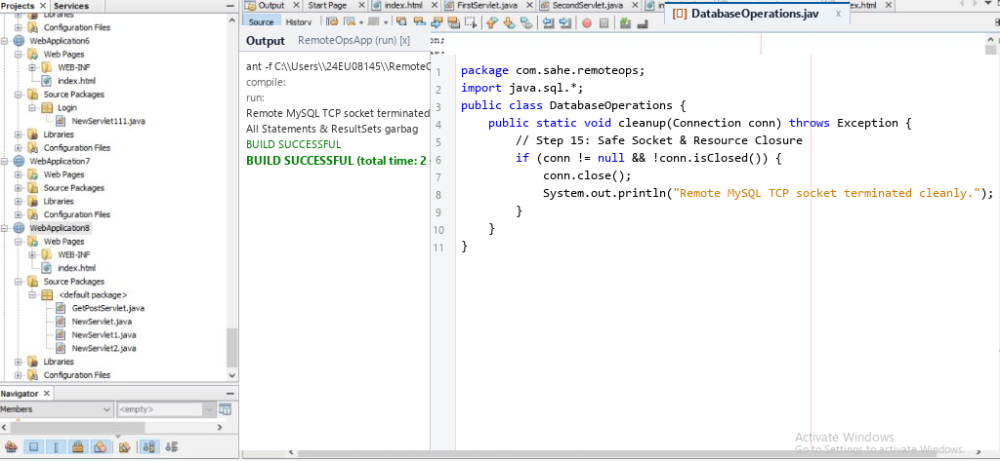
🔍 Click to ZoomClose PreparedStatement and release TCP network connection cleanly.
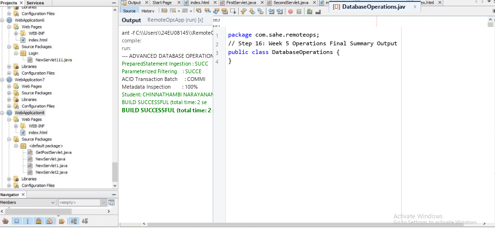
🔍 Click to ZoomInspect NetBeans console logs verifying BUILD SUCCESSFUL.
6. Result Analysis & Discussion
By default, JDBC operates in auto-commit = true mode, causing each DML query (UPDATE and DELETE) to be committed immediately to MySQL's InnoDB redo logs, ensuring durability at the cost of individual disk flushes.
Failing to close database connections causes socket starvation in production, exhausting MySQL's max_connections limit. Wrapping cleanup inside a finally block or try-with-resources guarantees socket destruction even under exceptions.
MySQL InnoDB acquires an exclusive row lock (X-lock) during UPDATE and DELETE. Explicit connection teardown releases locks immediately, preventing deadlock scenarios across concurrent database clients.
Checking the integer return value from stmt.executeUpdate() validates whether the target record was matched by the WHERE clause, differentiating zero-row matches from operational database failures.
7. Authentic Laboratory Execution Screenshot Proof
8. Conclusion
Step 10: Connection Closed Successfully.